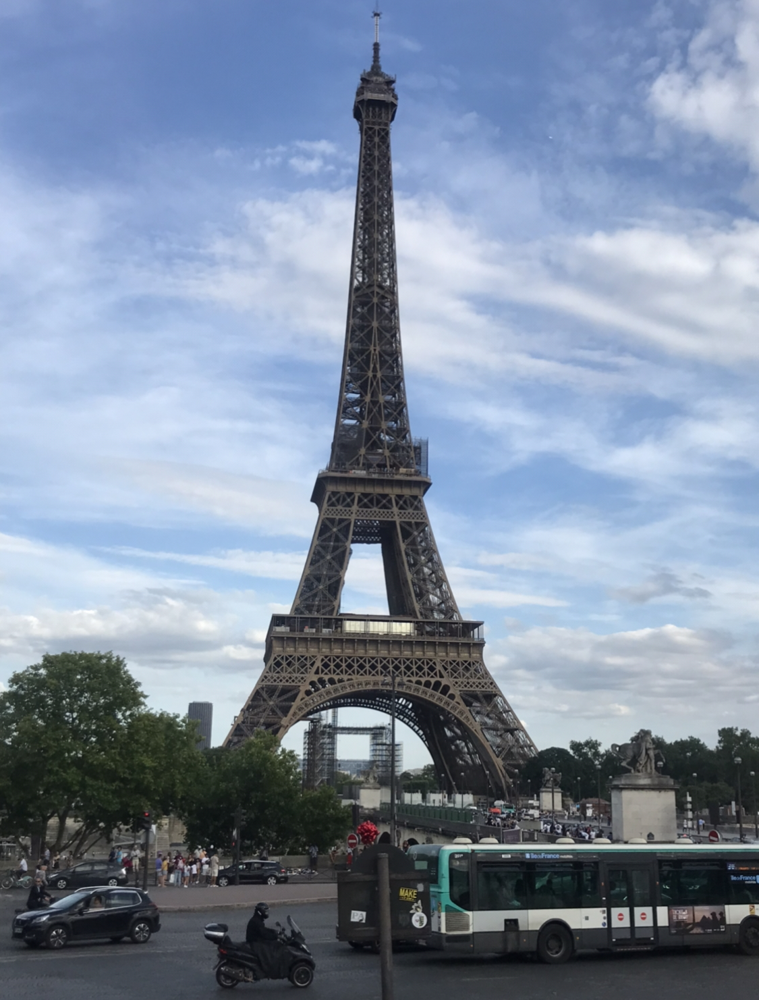
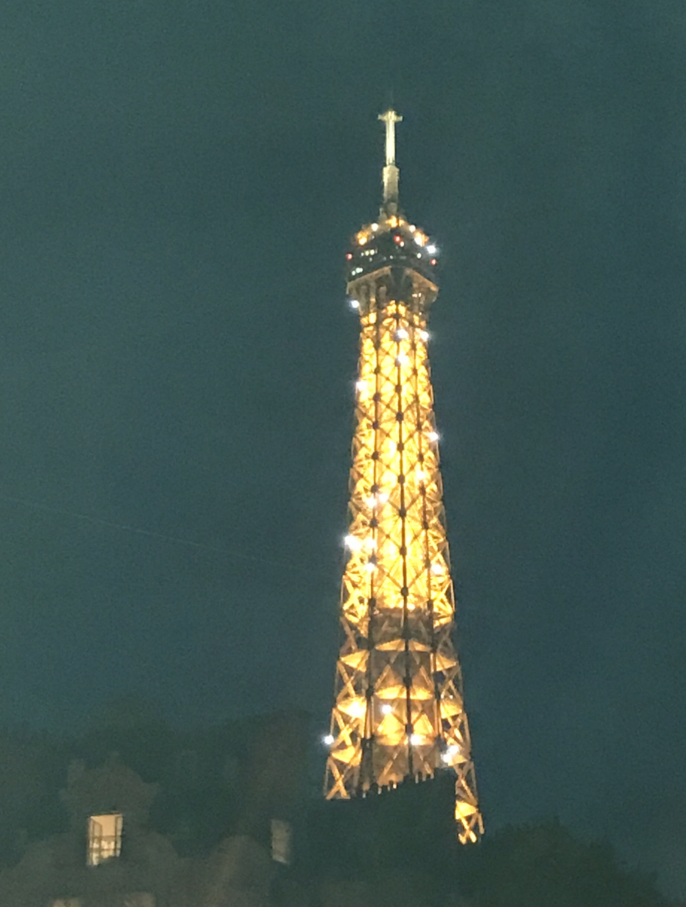

In this blog I will be talking about a few of the recent places that I've visited and I'll tell you all about it. I will mention things such as:
Activities
Prices
Reccomendations
Location 1
Paris, France~
I visited paris this summer for a few days and went to a few locations~
1.
Address-
Bd de Parc,
77700 Coupvray,
France
The first place I visted was Disneyland Paris. Disneyland is a must for everyone, especially if you're a child at heart! pictures of this amazing place don't do any justice for how wonderful it is in real life. The park is really big with many attractions to see. From Starwars to Princesses, there is something for everybody! Theres also many restaurants and gift shops throughout the park.
I loved my experience at Disneyland but here are some of my favourite things:
THE FIREWORK SHOW!!!!- This was 100% the best thing I ever witnessed in my life. If you don't think the park is worth it, the firework show definetly is! It will make you feel all types of emotions and may even make you shed a few tears. Be aware that the show does start at the end of the day and it gets quite packed!
The astethics- As expected, the park is really beautiful! with so much to see wherever you go, you will never be bored. The main castle especially is stunning!
👎
However, there are some things that you should be aware of when planning to visit:
Expect to wait in lines for a very looooong time! it should be expected that such a popular park will have long queues but you could be waiting for upto 2 hours to get on some of the rides
There are many rides in the park but I felt like most of them were aimed towards the younger visitors. If you love big rides and adrenaline then you wont find much except the Star Wars ride.
Prices in the park are definetly high! I would definetly raccomend coming to the park prepared with drinks from outside
Overall rating:
💜💜💜💜🖤
2. The Eiffel Tower

Picture taken by me.
I also visited the Eiffel Tower as it's the land mark of Paris and a must see when you're there. I am going to be 100% honest with you, when I first saw the tower I was in awe but the feeling didn't las very long as there's not much else to it. In real life it just felt like a very big piece of metal to me with just a very big name to it. If you think looking at the tower from the ground wasn't enough like I did, you can also go in to the tower and climb the levels for much cheaper than I thought.
Prices:
Below are the prices to go on the Eiffel Tower. You can visit the second floor or/and the Summit. The prices below are for the youth tickets (12-24) and be aware that prices may change depending on the day you visit and tickets are subject to availability.
The Tower Eiffel is a must see sight if you're visiting Paris. Here are some things I enjoyed about it:
Very affordable to go on top of the tower! I definetly expected the tickets to be way more expensive.
THE TOWER AT NIGHT! If you didn't know, the tower lights up at night! Every hour after 11pm the tower glistens up and becomes glittery for a few minutes, it's beautiful!

Picture taken by me.
👎
There were a few things I didn't like about this location:
The line to buy the tickets is pretty long so I definetly raccomend buying them in advance online
The place can get pretty packed so make sure you take care of your belongings as pickpocketers are very common around the area
There are too many vendors arund the area so it makes it look quite dirty. Be aware that they also might try to scam you!
Overall rating:
💜💜🖤🖤🖤
Comments-
Susan Smith: Loved the blog and the opinions! Can't wait for more places